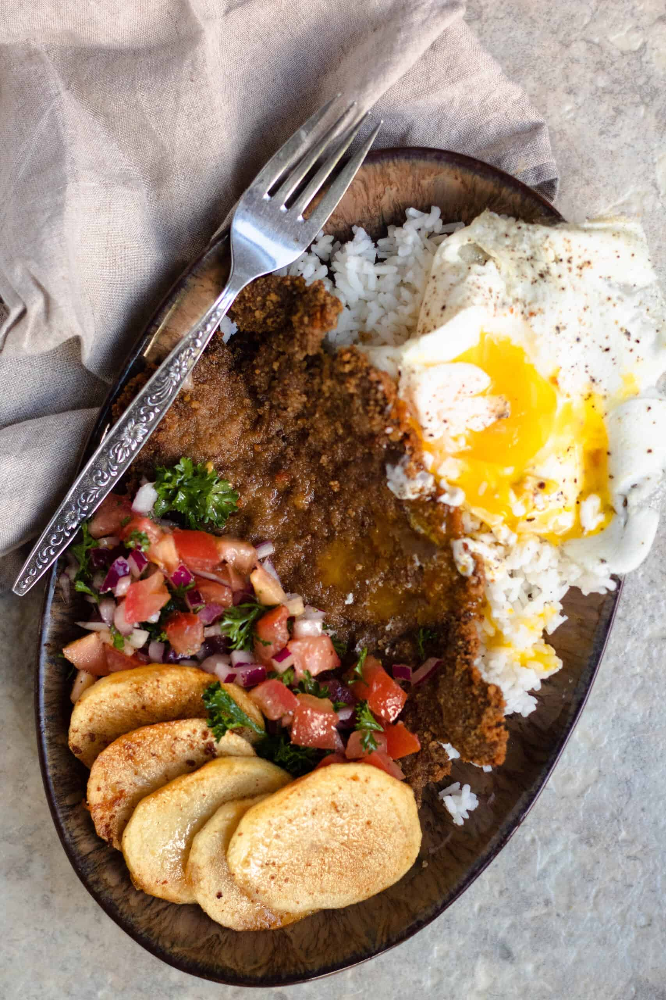

Silpancho

Description
Silpancho is a traditional Bolivian dish composed of breaded meat, rice, potatoes,
and a salad of tomato and onion. It also usually has an egg on top.
Ingredients
- 400 gr of meat (any cut will do, needs to be thin sliced)
- eggs
- 1 cup rice
- 3 potatoes
- bread crumbs
- 1 onion
- 1 tomato
- salt
- pepper
Steps
- Flaten the meat with a mallet and pour the bread crumbs on top as you hit it
- Cook the rice
- Boil the potatoes, then slice them and fry the slices
- Dice the vegetables
- Cook the egg for a runny yolk
- Plate as pictured and enjoy!
Home